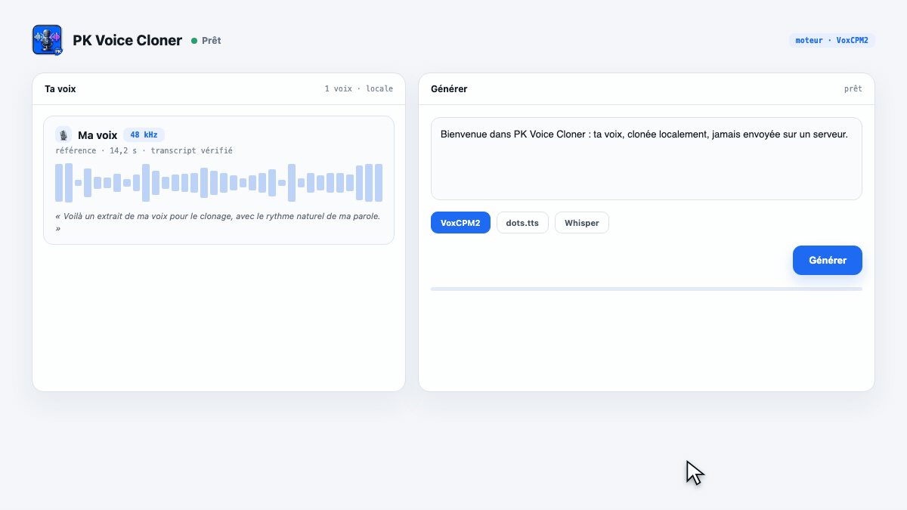
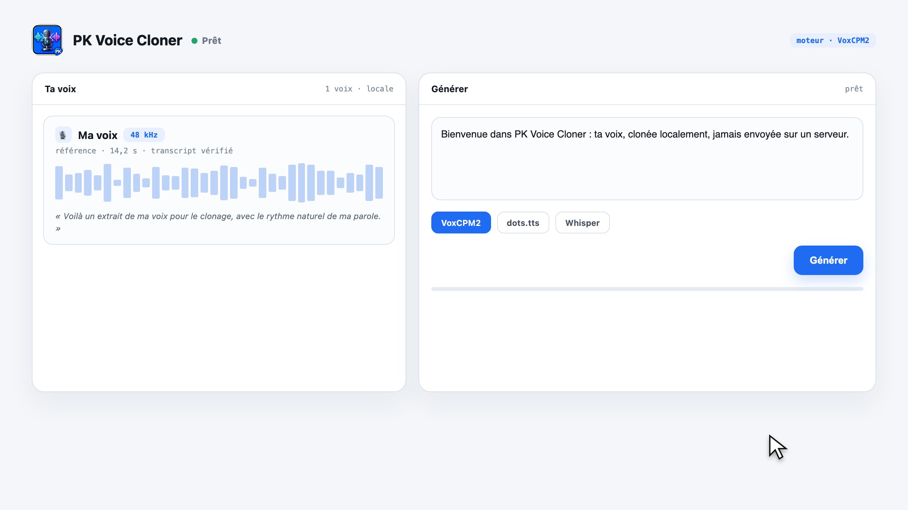
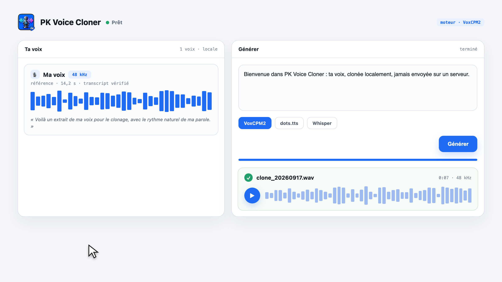

Ajoute un fichier audio ou enregistre au micro.Add an audio file or record from your mic.
macOS · Apple Silicon · Open source
Ta voix.
À toi. En local.Your voice.
Yours. Local.
Enregistre ou importe une voix, écris ton texte, puis écoute le résultat. Le traitement s’effectue sur ton Mac.Record or import a voice, write your text, then listen. Processing runs on your Mac.
Apple Silicon · macOS 14+ · Le DMG v2026.10.45 contient l’app seule : son installation nécessite le dépôt et l’environnement Python. Voir la procédure ci-dessous.Apple Silicon · macOS 14+ · The v2026.10.45 DMG contains the app only; it requires the project checkout and Python environment. See setup below.

Un studio, pas un service cloudA studio, not a cloud service
De l’enregistrement à la voix générée.From recording to generated speech.
Les étapes essentielles dans une interface macOS : bibliothèque vocale, textes, moteurs et génération.The essentials in a macOS interface: voice library, texts, engines and generation.
Relis le texte reconnu avant de l’utiliser.Review the recognized text before using it.
Installe et sélectionne les modèles compatibles depuis le studio.Install and select supported models in the studio.
Ajuste la vitesse et exporte le résultat audio.Adjust speed and export the audio result.


Ta voix reste sur ton Mac.Your voice stays on your Mac.
Les modèles s’exécutent localement sur Apple Silicon. Les poids nécessaires sont téléchargés lors de l’installation ou du premier usage ; ensuite, génération et bibliothèque restent locales. Utilise uniquement une voix avec le consentement de la personne concernée.Models run locally on Apple Silicon. Required model weights are downloaded during setup or first use; afterward, generation and the library stay local. Only use a voice with the speaker’s consent.
Installation vérifiéeVerified setup
Télécharge le projet et lance l’installation.Get the project and run setup.
Le DMG publié actuellement n’est pas autonome : l’app cherche le dépôt et son environnement Python sur la machine. Cette commande prépare ces éléments et construit l’app.The currently published DMG is not standalone: the app expects the project checkout and Python environment on the machine. This command sets those up and builds the app.
Voir les fichiers de la releaseView release assetscurl -fsSL https://raw.githubusercontent.com/mondary/Macos_PKvoicecloner/main/install.sh | shHomebrew : le cask mondary/tap/pk-voice-cloner existe, mais installe ce même DMG non autonome. Nous ne le présentons pas comme une installation fonctionnelle tant que le paquet n’est pas corrigé.Homebrew: the mondary/tap/pk-voice-cloner cask exists, but installs the same non-standalone DMG. We cannot present it as a working install until the package is fixed.